Hand-drawn 2D Art
Relive that Y2K era with retro-Windows inspired graphics, hand-drawn portraits and player sprites, and unique pixel art environments.
Surreal 2D psychological platformer
After a long day of work, you find yourself taking the same bus as always. You doze off and awake to find yourself back at work, except things aren't quite right.... the only thing on your mind now is to find your way back home.
The pitch
No Service Tonight is a short-form horror platformer focused on solving puzzles that lead you deeper and deeper into strange, surreal rooms. Each clue brings you closer and closer to a mystery you can't quite describe. Perhaps it's all connected in some weird way; that there's a deeper meaning to all this.
A story built on themes of burnout, loneliness, and disassociation, uncover the truth that's always been lying underneath the surface.
Relive that Y2K era with retro-Windows inspired graphics, hand-drawn portraits and player sprites, and unique pixel art environments.

Unravel the story behind why you're stuck without a way home, bit by bit with plenty of dialogue for players to read.

The Office, An Endless Hallway, An Abandoned Parking Garage, and... Home? Each liminal space is different from the last.

Progress through levels using strategic jumps, but don't forget to pick up clues and find your way to the right exits.
Trailer
Experience the game in this 1-minute trailer!
Design and illustrations
Sprite work, cutscene art, dialogue portraits, sanity portraits, and many many pixel art items.


You're seemingly back at the office... what's going on? Whatever this is, you need to get out. NOW. Inspired by the musty yellow walls, buzzing fluorescent lights, and all of the Windows-95 charm.
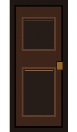
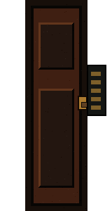

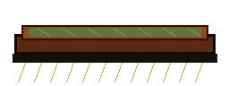
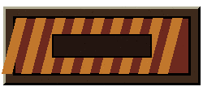
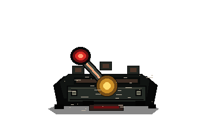
You left the office to find yourself in a room full of infinite doors. You're trying to follow the many exit signs as eletrical circuits guide your path. Be careful, something in the back of your mind fears that you might not be alone.


After a sudden chase, you push yourself into the closest door and open it to find yourself inside a parking garage. Your chest tightens as you find pieces of a map that seemingly connect together in a unique way. Could this be your way out?


You try following the map you pieced together. Into another room you find yourself transported back in time? At least, wherever you are, reminds you of a simpler time. When the world wasn't so harsh. Perhaps this place isn't so bad? Inspired by dreamcore and the nostalgia of your childhood.
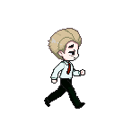

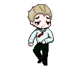
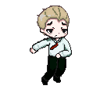
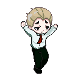
A showcase of the different player sprites created for the game's movement system.
A gallery of the various stills made and shown throughout the game's intro cutscene sequence. Learn more about the events leading up to your eventual arrival in the rooms.
A showcase of the various dialogue sprites that appear throughout the game.
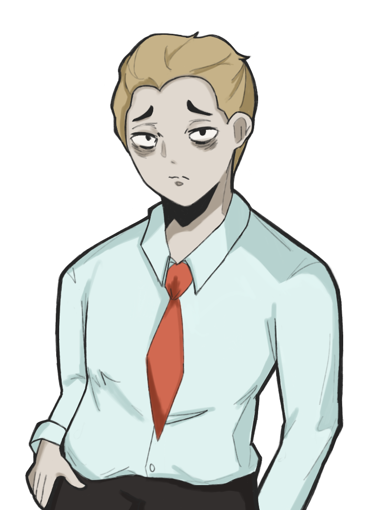

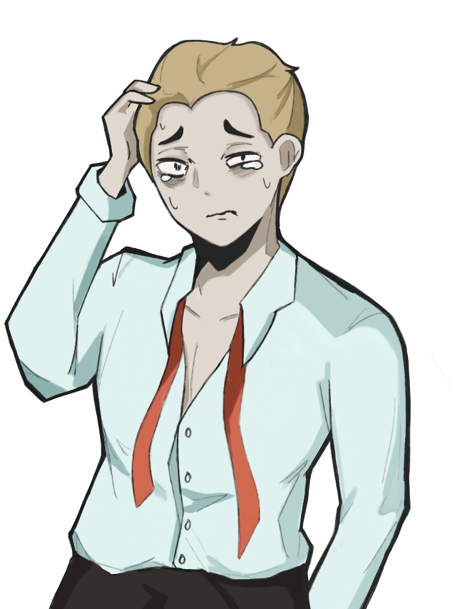
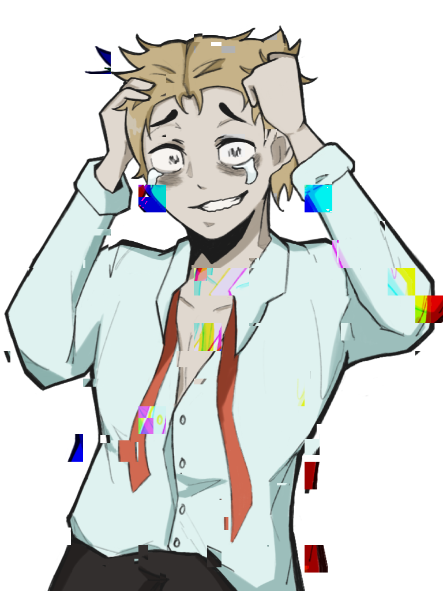
Visible in the game's inventory menu, each sanity sprite expresses the character's declining mental state.
Further Development
The complete vision is a compact, story-driven platform horror game where every new area asks the same question in a different way: do you keep searching for the route home, or let the place convince you that leaving is impossible?
Add more memories, past conversations, and environmental clues that explain why these rooms all seem to have so much influence over the player.
Expand on the puzzle complexity throughout the game. There can be many more rooms and many more complicated mechanics to add.
Currently the sanity mechanic isn't heavily used. It shows up for story beats, but perhaps it could also tie more into the gameplay itself.
There's plenty of areas within the game's art that could be improved such as the title and pause screens. With more time, more unique resources and assets can be created.
No Service Tonight is a serviceable game. Our team wanted to focus on making sure we had 4 complete levels that could complete the character's story arc in a neat way. All of the art that is present and all of the story beats are considered complete and finished.However, the game could have more levels, more backstory, and more puzzles for the player to solve. Future development could see even more unique art assets being created such as new environments for more unique levels, refined existing sprites such as items and clues, and unique cutscenes for each ending of the game (currently they're just text on the screen). For other potential ideas, the game is very story and dialogue heavy, perhaps voice acting could make the gameplay more engaging for the player. Movement could also see areas of improvement as more complex puzzles and levels might require the player to focus more on the platformer aspects of the game.